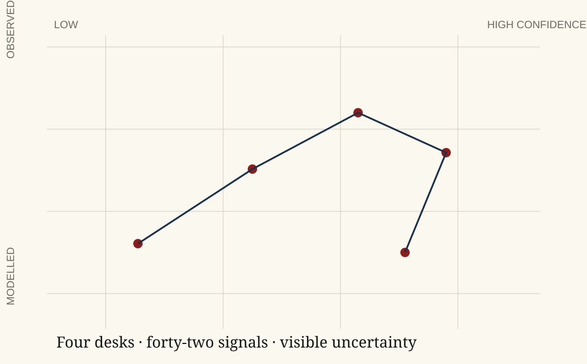

Observatory
A static signal layer for complex institutional systems.
Designed for GitHub Pages: no live data dependency, no analytics scripts, and no fragile runtime. Updated manually through transparent release notes.
Signals tracked42
Across infrastructure, health, critical supply, and AI governance.
High-confidence signals11
Supported by multiple independent source classes.
Active dossiers6
Long-form reviews in specialist or editorial review.
Correction events2
Material changes logged in public release notes.
Signal map
Editorial confidence, not false precision.
The observatory shows trend direction, institutional relevance, and confidence. It avoids pseudo-live scores when the underlying source environment is uneven.
Read grading rules
Tracked signals
Current watch list.
| Signal | Desk | Trend | Confidence | Editorial action |
|---|---|---|---|---|
| Grid interconnection queue delays | Infrastructure | Rising | Medium | Monthly note |
| Climate-linked municipal credit disclosures | Climate finance | Rising | High | Dossier update |
| Public-sector model assurance rules | AI governance | Fragmented | Medium | Policy memo |
| Water stress and agricultural contract revisions | Critical supply | Uneven | Moderate | Watch brief |
| Clinical model validation language | Health systems | Rising | Moderate | Research letter |